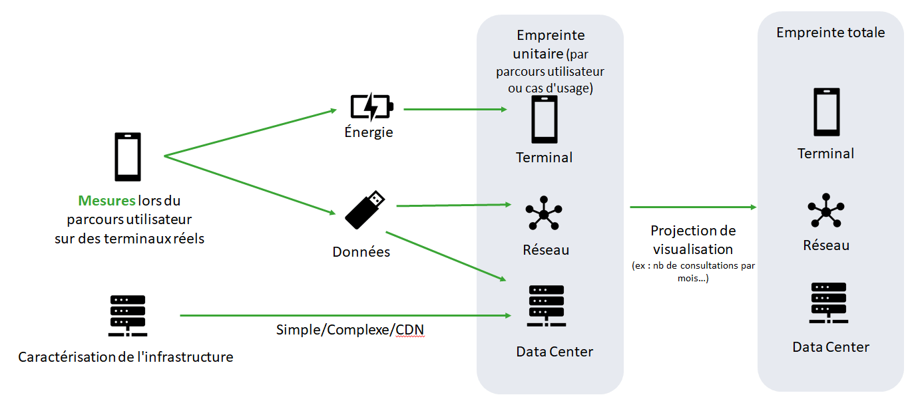
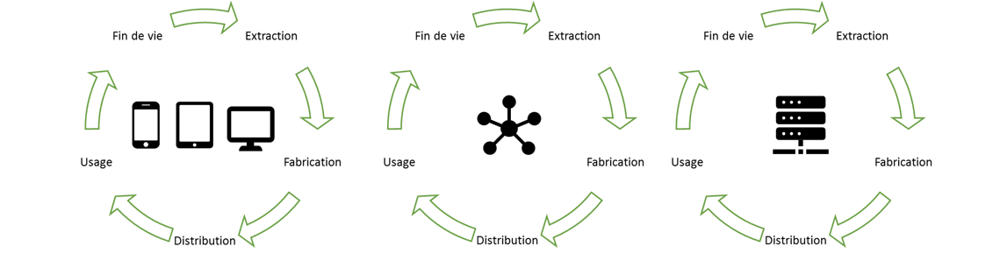
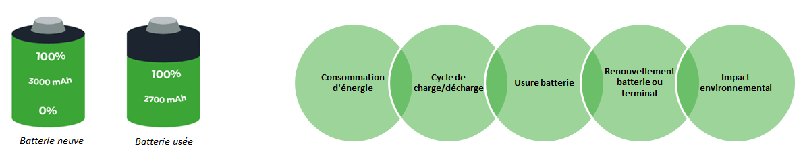
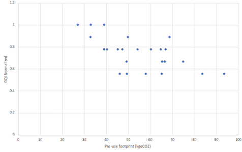
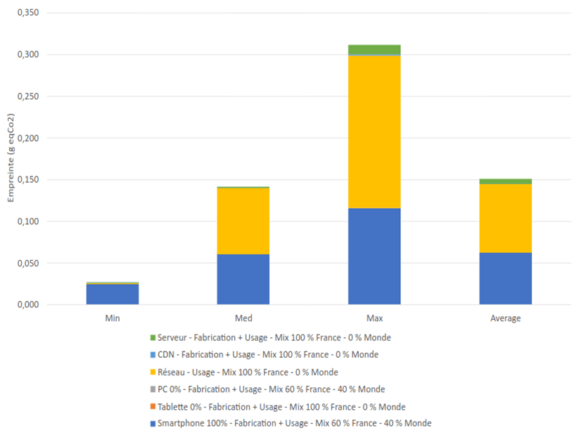
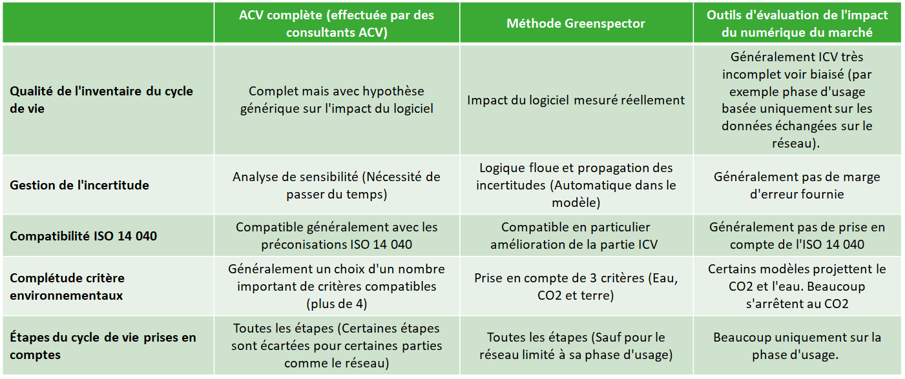
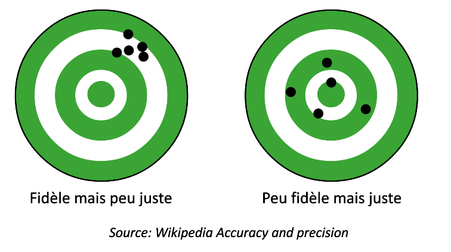

Avant-propos : Évaluer l’impact de l’usage
Cette note décrit succinctement la méthodologie que nous employons à la date de sa publication.
Dans une démarche de progrès continu, nous sommes vigilants à améliorer sans cesse la cohérence de nos mesures ainsi que notre méthodologie de projection des données en impact environnemental.
Il s’agit ici d‘évaluer les impacts environnementaux causés par l’usage d’un service numérique.
Cette analyse repose sur une méthode Analyse de Cycle de Vie (ACV), mais il ne s’agit pas de réaliser l’ACV du service numérique.
Une telle analyse serait un exercice sur un périmètre beaucoup plus large, qui inclurait des éléments propres à l’organisation autrice du logiciel.
Dans l’ACV d’un service numérique il conviendrait par exemple d’inclure pour sa phase de fabrication : les déplacements domicile-travail de l’équipe projet (internes et prestataires), le chauffage de leurs locaux, les PC et serveurs nécessaires au développement, à l’intégration et à la recette, les réunions sur place ou en distanciel, etc…
Méthodologie d’évaluation d’empreinte environnementale
Notre approche
La modélisation choisie s’appuie sur les principes d’Analyse du Cycle de Vie (ACV), et principalement par la définition donnée par l’ISO 14040.
Elle se compose d’une partie Inventaire du cycle de vie (ICV) complète et d’une Analyse du cycle de vie (ACV) simplifiée. L’ICV est prépondérant dans notre modèle. Il va permettre de s’assurer d’avoir des données fiables et représentatives. De plus, l’ICV ainsi obtenu peut le cas échéant être intégré dans des ACV plus poussées.
Nous évaluons l’impact environnemental des services numériques sur un ensemble limité de critères :
Les Emissions de Gaz à Effet de Serre (GES)
exprimée en g eqCO2,
telles que couramment utilisées, indiquent l’intensité de l’impact sur le changement climatique
La ressource en Eau
exprimée en Litres,
telle que définie par le water footprint network, est un indicateur reflet de la consommation en eau (eau bleue) mais aussi la quantité de polluants utilisés (eau grise). Il ne tient pas compte de la rareté locale des ressources mais il est un indicateur parlant.
L’occupation des sols
exprimée en m2,
ou land use en anglais, telle que définie originellement par Heijungs et al. (1992), est un indicateur reflet de l’impact sur la biodiversité. Il n’est pas le plus exhaustif (indépendant du temps normalement, mais c’est le plus utilisé actuellement).
Cette méthodologie a été revue par le cabinet EVEA – spécialiste en écoconception et analyses de cycle de vie.
Note sur l’eau : L’eau grise et l’eau bleu sont prises en compte sur toutes les étapes du cycle de vie. L’eau verte est ajoutée sur le cycle de fabrication des terminaux et des serveurs. Retrouvez la définition de l’empreinte Eau.
Gestion de la qualité des résultats
La qualité des résultats d’une ACV peut être modélisée de la façon suivante1 :
Qualité des données d’entrée x Qualité de la méthodologie = Qualité des résultats
Pour améliorer la qualité des données d’entrée, nous mesurons le comportement de votre solution sur des terminaux réels. Cela permet de limiter les modèles qui sont potentiellement sources d’incertitude.
Pour gérer la qualité des résultats, nous appliquons une approche qui permet d’identifier les sources d’incertitudes et de calculer l’incertitude du modèle. Notre méthode de gestion des incertitudes utilise la logique floue et ses ensembles2.
Au final, contrairement à d’autres outils et méthodologies, nous pouvons fournir des marges d’erreurs par rapport aux résultats que nous vous donnons. Cela permet d’assurer une communication de l’impact environnemental plus sereine vers les parties prenantes (utilisateurs, équipes internes, partenaires…)
1Qualité des resultats : SETAC (Society of Environmental Toxicology and Chemistry 1992)
2Bien que mentionnée souvent dans la littérature traitant d’incertitudes en ACV, cette approche est peu utilisée. En effet les modèles stochastiques comme les simulations de Monte Carlo sont souvent préférés (Huijbregts MAJ, 1998). Dans notre cas, l’utilisation de la logique floue semble plus pertinente, car elle nous permet de gérer les inexactitudes épistémiques, notamment dues à des estimations d’expert.
Étapes de calcul

Phases prises en compte pour le matériel utilisé

« Phases prises en compte dans le cycle de vie des matériels qui sont mobilisés en phase d’usage du service numérique »
Note sur le modèle d’impact de la partie terminal
Les méthodologies classiques d’analyse d’impact prennent comme hypothèse un impact uniforme du logiciel (consommation moyenne quel que soit le logiciel ou l’état du logiciel). Notre approche innovante permet d’affiner cet impact. De plus, nous améliorons la modélisation de l’impact du logiciel sur la phase de fabrication du matériel en prenant en compte l’usure de la batterie.
La batterie des smartphones et PC portables est un consommable, nous modélisons l’impact du logiciel sur celui-ci.

Données d’entrée de l’Inventaire du Cycle de Vie
Données mesurées
Énergie consommée sur smartphone
Données échangées sur le réseau
Requêtes traitées par le serveur
Données modélisées
Énergie consommée sur tablette et PC
Énergie et ressources consommées sur serveur
Énergie et ressources consommées sur le réseau
Hypothèses Terminaux
Impact fabrication d’un Smartphone
Impact fabrication batterie smartphone
Impact fabrication batterie tablette
Impact fabrication batterie PC
Impact fabrication tablette
Impact fabrication PC
Nombre de cycles max avant usure smartphone
Nombre de cycles max avant usure Tablette
Nombre de cycles max avant usure Tablette
Capacité moyenne batterie smartphone
Capacité moyenne batterie tablette
Capacité moyenne batterie PC
Voltage d’une batterie
Durée de vie smartphone
Durée de vie tablette
Durée de vie PC
Ratio de remplacement batterie vs changement du smartphone
Ratio de remplacement batterie vs changement de la Tablette
Ratio de remplacement batterie vs changement du PC
Vitesse de décharge de référence sur le terminal (mesurée)
Hypothèses Serveurs
Puissance du serveur
Nb de cœurs
PUE du datacenter
Puissance par cœur
Server time (TTFB)
Number of max requests per second
Puissance par requête
Nb de cœurs par VM
Nb de VM par appli simple
Nb de VM par appli complexe
Impact Fabrication Serveur
Durée de vie serveur
Débit CDN
Hypothèses Énergie
Facteur d’émissions électricité moyenne mondiale
Facteur d’émissions électricité France
Exemple de travail sur les hypothèses :
La méthodologie de propagation des incertitudes nous oblige à identifier précisément la qualité de ces hypothèses. Voici quelques exemples, en particulier l’impact de fabrication du matériel.
L’analyse bibliographique nous permet d’identifier les impacts de différents smartphones et d’associer l’indice de confiance DQI. Ces chiffres sont principalement issus des constructeurs.
L’impact moyen calculé à partir de ces indices de confiance est de 52 kg eq Co2 avec un écart type de 16 kg.

Exemple de restitution
- Dans cet exemple : impact médian de 0,14g eqCO2 principalement sur la partie « Réseau ».
- Cet impact correspond à la visualisation d’une page web pendant 20s
- L’incertitude est calculée par le modèle Greenspector en appliquant le principe de propagation des incertitudes à partir du périmètre et de hypothèses décrits précédemment.

Éléments nécéssaires
Afin de déterminer l’impact de votre solution, nous avons besoin des informations suivantes :
- Ratio de visualisation Smartphone/Tablette/PC
- Ratio de visualisation France/Monde
- Localisation des serveurs France/Monde
- Serveurs simples ou complexes (ou nombre de serveurs de la solution)
Sur devis, nous pouvons réaliser une ACV simplifiée se basant sur ce modèle mais adaptant d’autres éléments à contre cas particulier. Par exemple:
- Mesure de la consommation d’énergie de la partie serveur (via un partenaire)
- Précision des hypothèses serveur (PUE, type de serveur)
- Mesure de la partie PC (via mesure laboratoire)
- Précision des facteurs d’émissions électriques d’un pays en particulier…
Comparatifs des modèles d’estimation

Les calculs Greenspector sont intégrés dans un webservice actuellement utilisé par nos clients. Retrouvez très prochainement nos calculs d’empreinte environnementale de vos applications mobiles et sites web dans une interface SaaS.
Incertitudes – méthode de calcul
Les méthodes de calcul dans la sobriété numérique sont souvent peu justes et parfois, en même temps, peu fidèles. Ceci vous amène potentiellement à utiliser des outils qui évaluent mal l’impact de vos solutions. Le risque est de faire travailler vos équipes sur des axes qui n’ont pas d’impact réel sur l’environnement.
Certaines approches, plus utilisés dans les ACV (et pas dans les outils du marché), améliorent la fidélité mais posent un risque de donner un résultat peu juste (R. Heijungs 2019).
Notre approche repose sur une méthode de calcul innovante, l’arithmétique floue, proposée pour la première fois par Weckenmann et al. (2001).
Cette approche est très performante pour modéliser des données vagues (épistémiques) non-probabilistes, ce qui est souvent le cas de données traitant de sobriété numérique. Nous ciblons de cette manière des résultats justes et fidèles.

Les solutions concurrentes font des choix qui les rendent généralement peu fidèles et peu fiables:
– Fidélité : Faible maîtrise de l’environnement, pas de méthodologie de gestion des écarts de mesures
– Justesse : Modèle basé sur des métriques non représentatives comme la consommation de données ou la taille du DOM, pas de mesure d’énergie…